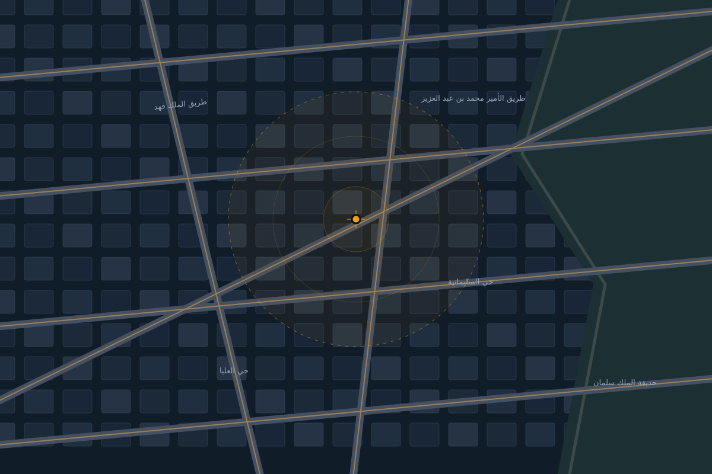

GEOSPATIAL INTELLIGENCE / 05
المسح الجغرافي والتحليل المكانينافذتك على تفاصيل المدينة
مساحة استكشاف حرة بواجهات عائمة.

الرياض، حي العليا24.7136° N · 46.6753° E
N ↑
مخطط فني توضيحي · ليس خريطة جغرافية فعليةداخل النطاق48منشأة وخدمة
جودة الوصول92 / 100مؤشر الخدمات
مساحة الاستكشاف12.6كيلومتر مربع